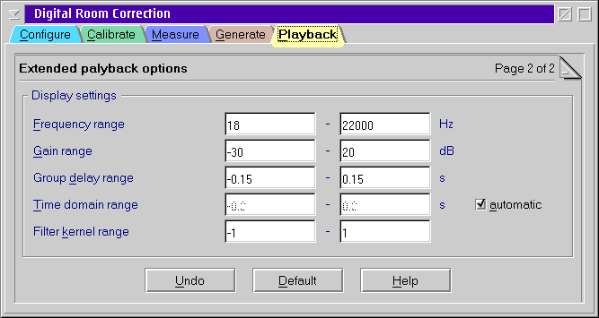

Extended playback options

Display settings
- Frequency range
- This controls the X axis of the of the frequency response graph.
- Gain range
- Range of the left Y axis of the frequency response graph.
- Group delay range
- Range of the right Y axis of the frequency response graph.
- Time domain range
- X Axis of the time domain view of the filter kernel.
You may select automatic to adjust the axis to the selected
filter kernel length.
- Filter kernel range
- Y Axis of the time domain view of the filter kernel.